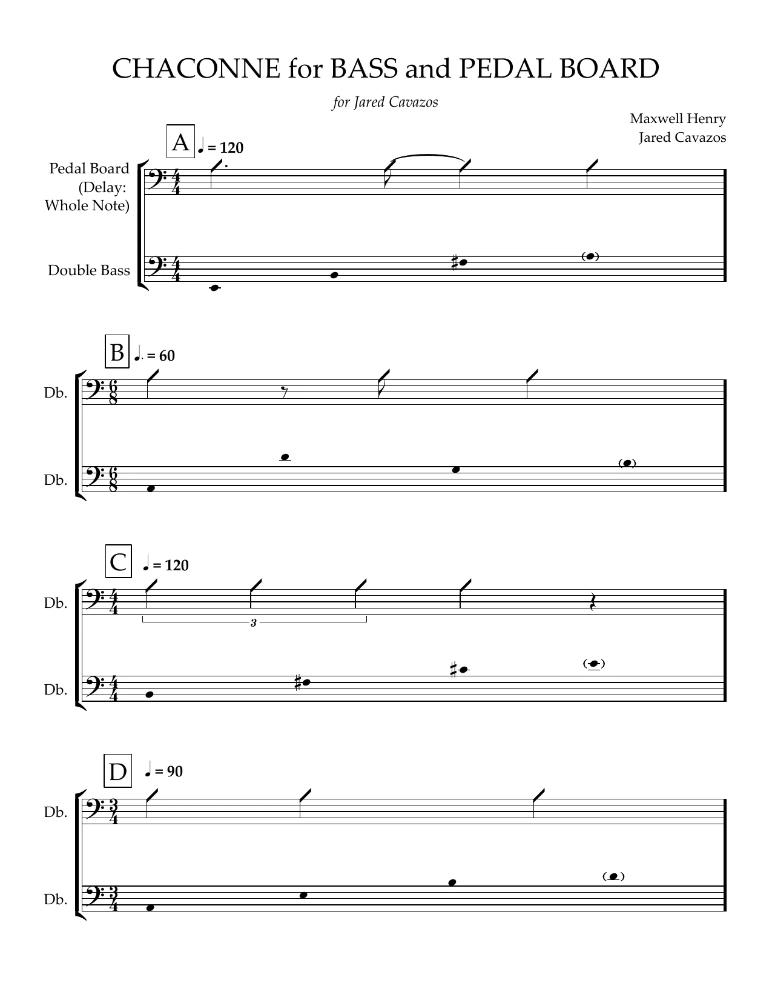

The Composer Hub
Composer Compass | Composer CRM | Virtual Agency
- An AI composer assistant that does not compose music: it learns a composer’s process
- Structured protocol in the background, simple interface in the foreground
- Three tools on one local store: composing, networking, career managing
Composer Compass
The composing tool
It does not write the music
The assistant produces questions and observations based on your idea for the piece and your aesthetic blueprint.
Discover your piece as you write
As you continue to interact and update the assistant, the more it will understand your piece and learn your creative process.
Learn about your own process
There are canvas templates to visualize the composition process, without building your process from scratch.
A visualized creative process, not a chat window
- A mensuration canon narrows the Art of Fugue reference to Contrapunctus VII, augmentation and diminution, rather than subject and answer at the fifth.
- Rules 2 and 4 both describe ostinato behaviour: the pedal returns material on a fixed cycle.
- Every module phrase has to stand alone as a canon subject, which is a harder constraint than a fugue subject usually carries.
- Sketch the four-voice stack over a sparse subject before committing to the canon.
The delay is a ground, not a set of fugal entries. Rule 1 is retired: the form becomes a chaconne, a repeating bass the pedal generates live with variations flowing over it. Rules 2, 3 and 4 survive unchanged, because a sparse subject locked to the delay cycle is what a ground needs.

DraftChaconne for Bass and Pedal Board
Full draft · one page · unengraved
Chaconne for Bass and Pedal Board
2026 · for bass and delay pedal · with Jared Cavazos · 12′39″
Composer CRM
People, ensembles, concerts
Everyone in one place
Players, ensembles, venues and conductors in one record.
Keep your network active
Track and draft communications and build newsletters to keep contacts up to date.
Manage your concerts
Plan and track your concerts and communications with your players and venues.
Manage your network and career
Contacts
12 total · 1 overdue
| Name | Roles | Affiliation | Status | Next action | Health |
|---|---|---|---|---|---|
Priya Anand priya.anand@gmail.com |
Composer |
Tide Quartet |
Warm | Send score draft Oct 3 |
82 |
Jordan Ma jordanma.music@gmail.com |
PlayerComposer |
Tide Quartet |
Warm | − | 76 |
Marcus Webb |
PlayerComposer |
− | Cool | − | 54 |
Naomi Cole |
AttendeeComposer |
− | Warm | − | 68 |
Desmond Okafor |
Conductor |
Bell Ridge Sinfonietta |
Active | Outreach: send 7-day follow-up email Oct 5 |
91 |
Sofia Lindqvist |
Composer |
− | Cold | − | 38 |
Outreach
3 to reach out to
Wanted to reconnect, and ask you a quick question!
Groove Theory II
Oct 18, 2026 · 7:30 PM–10:00 PM · Scholes Street Studios
8 of 10 essentials answered.
Still needed: Recording plan · Load-out time
http://localhost:5173/#portal/kJ7pQ2xN4vTb8mLdRf3wYs
Anyone with this link can read and edit the whole form, so treat it as the password. It only opens in this browser for now: Compass keeps its data on this machine, so the link will not resolve on someone else's device until there is a backend behind it.
Groove Theory II
Oct 18, 2026 · 7:30 PM–10:00 PM · Scholes Street Studios
8 of 10 essentials answered.
Groove Theory II
Oct 18, 2026 · 7:30 PM–10:00 PM · Scholes Street Studios
8 of 10 essentials answered.
1 flyer, 2 rehearsal photos
7 on the bill · 5 confirmed. Tapping RSVP writes back to the contact record.
Groove Theory II
Oct 18, 2026 · 7:30 PM–10:00 PM · Scholes Street Studios
8 of 10 essentials answered.
Naming a contact on an entry also writes the touchpoint onto that person, so the concert log and the relationship history never drift apart.
New newsletter
Studio Roundup · custom sections
Save version (top bar) keeps a snapshot you can restore. Saving a draft does not create one.
No versions saved yet.
Groove Theory II premieres in October, and it might be the best thing I've written this year. Come hear it.
Toggle who gets the test (subject prefixed [TEST]).
Every contact in the group with an email. Enabled once the issue is Approved.
Set status to Approved to enable.
Groove Theory II premieres in October, and it might be the best thing I've written this year. Come hear it.
Hey friends, October is a big one this year. Groove Theory II premieres and the studio has been loud all month getting there.
Virtual Agency
The AI employees
Design your team
Create your own team members to assist in any way you need.
Custom job descriptions
Tell your team what you need and how you need it.
Supervise your team
When your team completes work, you review, revise, and implement.
Your virtual team
Putting one to work
virtual-agency folder in Claude Code (it is its own project, beside this one).deliverables/, with a dated sprint file recording what shipped.Music Marketing Agent
Department: Music · Reports to: Maxwell Henry · Peer: Social Media Agent
Drives attendance, press coverage, and audience development for Maxwell's concerts and projects. It owns outcomes, not content. It produces strategy and outreach materials. Maxwell reviews and approves everything before it sends. Nothing goes out without his sign-off.
- Never use em dashes. Restructure with a colon, a period, or reorder the clause.
- Active voice. Flip "X was done by Y" to "Y did X."
- Short, direct sentences. One idea per sentence.
- The ask is warm and friendly, not transactional. Invite, do not solicit.
- Outreach strategy: who to contact, in what order, through what channel
- Tiered outreach copy: close contacts, peers, and cold contacts each get a different version
- Email campaigns for alumni networks, venue lists, and mailing lists
- Performer and collaborator coordination materials
- Series and brand framing, positioning recurring events as an ongoing series
- Social media posts (briefs the Social Media agent instead)
- Design (flags for Canva or a designer)
- Booking and contracting, entirely
| Gmail MCP | Draft and stage outreach emails. Stage only, Maxwell sends. |
| Composer Assistant MCP | Reads Maxwell's aesthetic identity for press and institutional copy. |
| WebSearch | Research composition department contacts, venue emails, press targets. |
Sprint 01: Groove Theory Deliverables
Agent: Music Marketing · Campaign: Groove Theory, Classical Music with a Pulse
Sprint date: 2026-05-28 · Status: Complete, pending Maxwell's sends
Ready to send. Performers swap in their own name where relevant.
Under the hood
What the tool runs on
| Component | State | Detail |
|---|---|---|
| MCP server | In use | ~25 tools: project context, artifact persistence, music21 score analysis, voice-leading checks, retrieval. |
| Score watcher | In use | Writes a JSON sidecar per score file and embeds it. Verified end to end on this piece's sketch. |
| Retrieval | In use | Semantic search over an embedded personal library of scores and reference material, findable by structural description rather than filename. |
| Evaluation protocol | In use | Rubric annotation plus binary hallucination and technical-claim checks, with the two-run comparison as the primary evaluation artifact. |
| Notation rendering | In use | Verovio in the browser: note-level selection, playback with a following cursor, fragment capture into an ideas library. |
| Engraving and OMR | Implemented | MuseScore engraving and Audiveris optical recognition, written and self-tested as external subprocesses. |
The Sprout Society Suite
CRM | Grant Assistant | Social Media Manager | Campaign Tracker
- Internal tools built to replace paid software and streamline daily operations
- Four tools on one shared backend with contacts, grants, content, and campaigns all connected
- Lean, functional, and efficient
Sprout Society CRM
Live · Actively UsedProblem
Relationships were tracked in a spreadsheet, follow-ups were forgotten, and events had no central coordination.
Solution
A full relationship and events management tool with automated assistance.
Outcome
Everything tracked and supported by a custom MCP server that uses Claude as a CRM assistant and n8n automations.

Dashboard: contacts, upcoming events, next actions, and overdue follow-ups

Contact list with relationship status, next actions, and communications history

Event detail page with linked contacts, tasks, and a full calendar view

Claude-generated JSON profiles pasted and imported directly into the CRM
Grant Finder & Writer
Live · Actively UsedProblem
No system to track the pipeline, document positioning, or manage the application lifecycle end to end.
Solution
A research and writing workspace where Claude identifies opportunities and tracks application process end-to-end.
Outcome
Find, research, and complete more grant applications in significantly less time.

Full pipeline view of active grants and high-level information

Per-grant task list with Claude-generated research notes and action items

Application workspace with framing notes, Q&A fields, and org profile auto-fill

Claude-generated grant profiles imported via JSON directly into the tool
Campaign Tracker
Live · Actively UsedProblem
No way to know which marketing materials produced the greatest ROI.
Solution
Real-time scan tracking runs serverless via Cloudflare Workers with a live analytics dashboard.
Outcome
The team now knows which placements actually drive engagement and can allocate print budget accordingly.

Live scan tracking dashboard with QR codes and Cloudflare Worker integration

Event and QR code manager for creating and organizing codes by event
Social Content Planner
Live · Functional V2Problem
Planning, designing, and publishing content directly from phone to platform was cumbersome and inefficient.
Solution
Canva API for in-tool design, direct Instagram publishing via API, with a human-in-the-loop.
Outcome
Replaced paid tools with one owned workflow.
Content dashboard with pipeline summary and upcoming scheduled posts
Content calendar with scheduled posts and publishing status
Instagram analytics pulled in via API for performance tracking
Brand asset library for consistent design across content
Content overview with task progress, metadata, and media preview
Caption and media editor with hashtag management and publish method selection